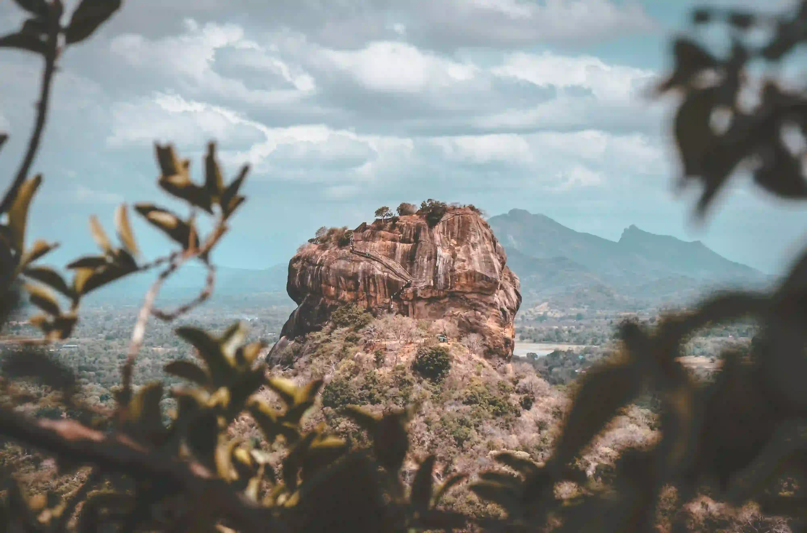
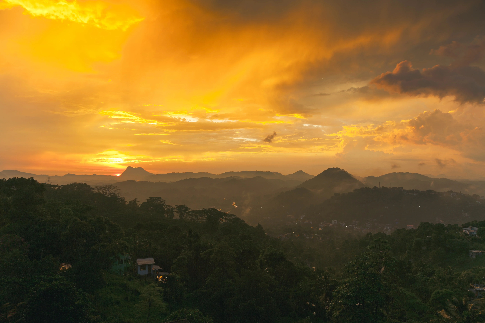

Tour invernale
Tour di 9 Giorni: Safari, Storia e Mare nello Sri Lanka


Check In
Check Out
Adults
Children
7 Giorni |
Richiedi
Panoramica del giro
Questo è un viaggio in Sri Lanka di 9 giorni che offre un’esperienza ricca e varia. Si inizia con la visita al cuore dell’industria ittica a Negombo, seguita da un safari a Sigiriya e una visita alla roccia di Sigiriya. Il tour prosegue con la scoperta del patrimonio culturale a Kandy e Polonnaruwa, un viaggio panoramico in treno a Ella, un safari nel Parco Nazionale di Yala, e l’avvistamento di balene a Mirissa. Il viaggio si conclude con una visita alla fortezza di Galle prima del volo di ritorno. Questo potrebbe essere il tuo viaggio di nozze in Sri Lanka o un'avventura indimenticabile con la nostra guida turistica.

Giorni 1
Arrivo in Srilanka
Arrivo in Sri Lanka, pick up in aeroporto e trasferimento a Negombo che è il cuore dell'industria ittica dello Sri Lanka. La città è rinomata per la pesca ed il mercato del pesce di Negombo è probabilmente il migliore dell'isola. La città è dominata da santuari e chiese pittoresche per via della sua popolazione a maggioranza cattolica. Se siete interessati, visiteremo il mercato del pesce per sperimentare il sostentamento di una comunità di pescatori tradizionale nello Sri Lanka.
Pernottamento in un hotel sulla spiaggia a Negombo.

Giorni 2
visitare Sigiriya
Dopo la prima colazione in hotel andremo verso Sigiriya, arrivo e sistemazione in hotel. Pranzo nel villaggio di Sigiriya. Nel pomeriggio vi porteremo a fare un safari nel parco Minneriya per vedere gli elefanti in libertà. Prima di tornare in hotel ci sarà la possibilità di fare un massaggio in un centro ayurvedico.
Cena e pernottamento a Sigirya.


Giorni 3
visitare la roccia di Sigiriya
Dopo la prima colazione in hotel, il prima possibile, andremo a visitare la roccia di Sigiriya, uno dei siti più affascinanti del patrimonio mondiale dell'UNESCO sulla cui sommità sorgeva il palazzo del Re Kasspa e da cui si domina bene la foresta circostante. Partiremo poi verso il sito archeologico di Polonnaruwa, seconda capitale di un Regno medievale avanzato e prospero. Pranzo in una casa tradizionale e nel pomeriggio safari sul dorso dell’elefante.
Cena e pernottamento in hotel.

Giorni 4
verso Kandy
Dopo la prima colazione in hotel partiremo verso Kandy, in mattinata visiteremo il Tempio d’Oro in Dambulla, dove all’interno delle 5 grotte vi faremo conoscere 2100 anni di storia. Sosta a Matale per visitare il Giardino delle Spezie ed il tempio Indù. Dopo pranzo, passeggiata nel centro di Kandy e nella piazza del mercato. In serata visiteremo il “Dalada Maligawa" Tempio del Sacro Dente Religioso del Buddha ed in seguito vi porteremo a vedere delle danze tradizionali dello Sri Lanka.
Cena e pernottamento in hotel a Kandy.

Giorni 5
visitare il Giardino Botanico
Dopo la prima colazione in hotel andremo a visitare il Giardino Botanico, avrete poi del tempo libero a disposizione per vedere la fabbrica di Batik ed il museo delle Gemme. Partenza verso Nuwara Eliya, sosta per ammirare la cascata di Ramboda. Visiteremo poi una fabbrica di tè dove vi verrà mostrato tutto il processo di lavorazione delle foglie della pianta del tè, ed infine faremo una passeggiata tra le piantagioni. Dopo il pranzo la visita della città di Nuwara Eliya. Spostamento a Nanu Oya, dove viaggerete sul treno panoramico in prima classe fino ad Ella. In serata dopo una lezione di cucina con una signora locale, potrete gustare una deliziosa cena tradizionale.
Pernottamento ad Ella.

Giorni 6
verso Tissamaharamaya
Dopo la prima colazione in hotel partiremo verso Tissamaharamaya. Sosta alla cascata Rawana e visita a Buduruwagala. Nel pomeriggio safari nel parco nazionale di Yala per vedere leopardi e orsi. È inoltre possibile avvistare cervi maculati, sambar, cinghiali, bufali selvatici, bradipi, sciacalli, manguste e diverse specie di uccelli.
Pernottamento in hotel con cena.


Giorni 7
verso mirissa
Dopo la la prima colazione in hotel partiremo verso Mirissa. Durante il viaggio ci fermeremo a visitare una statua del Buddha gigante ed il tempio di Weurukannala.

Giorni 8
visitare la fortezza di Galle
La mattina presto verso le 6.30 vi porteremo al porto di Mirissa per un gita in barca per l’avvistamento di balene e delfini. Il sud dello Sri Lanka è considerato uno dei migliori posti al mondo per avvistare balene blu, capodogli e delfini spinner. Dopo pranzo, proseguiremo per la fortezza di Galle. Vi porteremo poi a vedere le tartarughe marine ed i pescatori sul palo.
Pernottamento e cena a Mirissa.
Giorni 9
rientro in Italia.
Dopo la la prima colazione in hotel, partenza per l’aeroporto per prendere il volo di rientro in Italia.
inclusi
- Caloroso benvenuto Caloroso benvenuto in aeroporto con una bellissima ghirlanda di orchidea.
- Trasferimenti Trasferimenti con la macchina privata con aria condizionata.
- Tasse Tasse governative e pedaggi stradali.
- alloggio Vitta alloggio per la guida.
non inclusi
- biglietti d'ingressi Tutti i biglietti d'ingressi per siti e templi, parchi nazionali, costo per jeep 4X4 safari , Boat safari Negombo, massaggio ayurvedico.
- Biglietti aerei

{kind=link}
{kind=link}